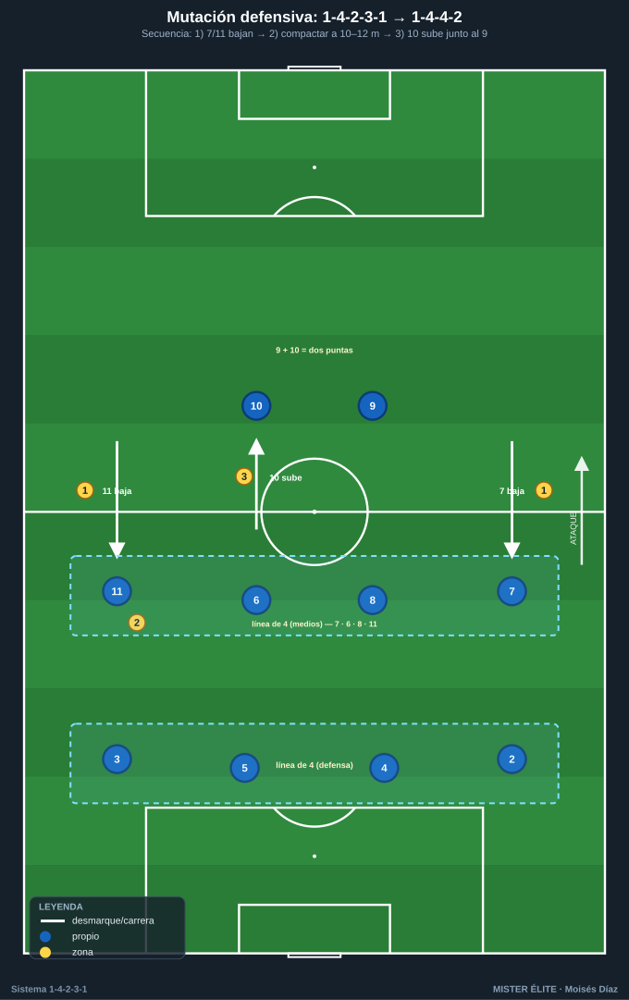
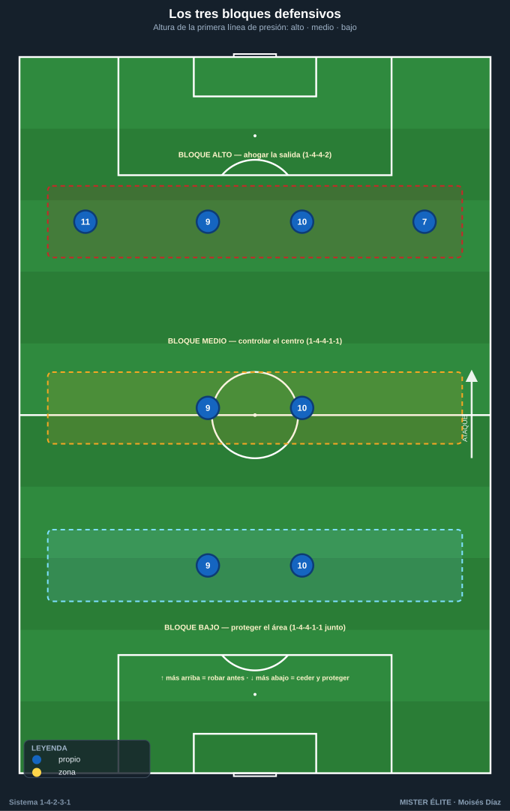
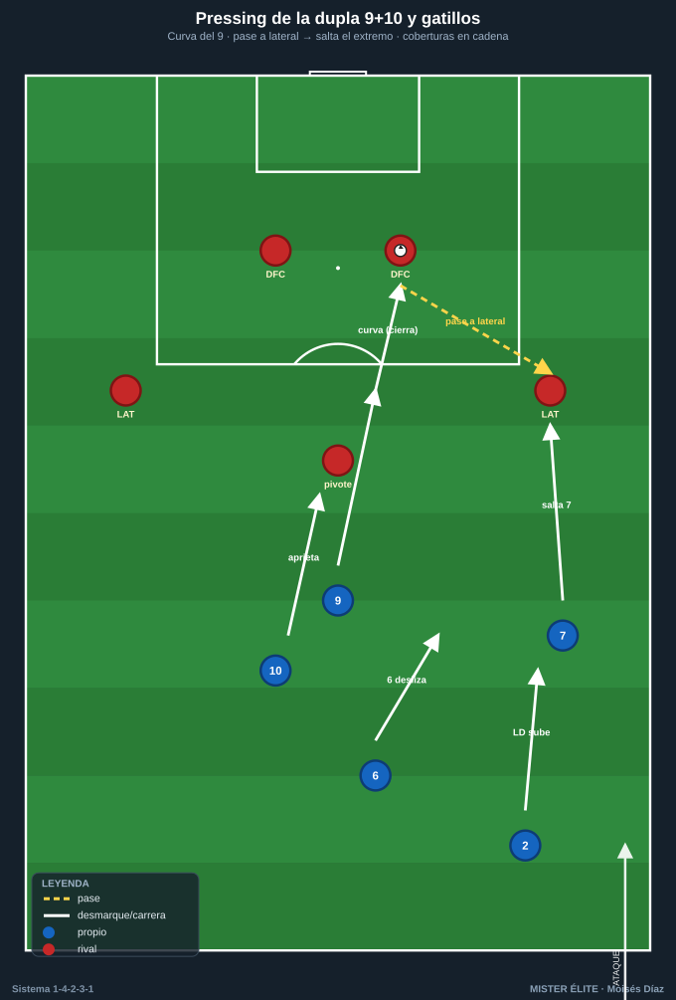
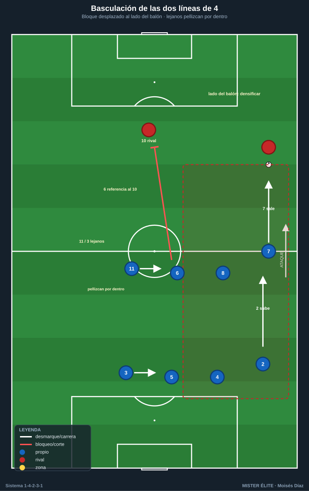

Módulo 02 · Fase defensiva del 1-4-2-3-1
Idea matriz: sin balón el 1-4-2-3-1 NO defiende como un 1-4-2-3-1. Muta a 1-4-4-2 (el 10 sube con el 9) o a 1-4-4-1-1 (el 10 engancha al pivote rival). Los extremos 7/11 son la bisagra de esa mutación.
Defender bien este sistema es, sobre todo, cambiar de forma con orden. Este módulo recorre los roles defensivos, cómo se muta a dos líneas de 4, los bloques y alturas, el pressing de la dupla 9+10 con sus gatillos, la basculación y, lo más importante, el punto débil y sus soluciones.
1. Roles defensivos por demarcación
- POR 1 — portero-líbero: última cobertura a la espalda de la línea de 4. Cuando el bloque sube, se adelanta a la frontal del área (10–16 m de la portería) para barrer pelotazos al espacio. Manda la línea de fuera de juego con la voz.
- DFC 4 / 5 — los dos centrales: pareja de marca + cobertura permanente. El central del lado del balón aprieta al DC rival; el del lado contrario baja medio cuerpo y cubre (diagonal). Ganan el duelo, mandan el fuera de juego y vigilan las llegadas de segunda línea (8/10 rival).
- LD 2 / LI 3 — los dos laterales: su duelo de referencia es el 1v1 con el extremo rival, orientándolo hacia fuera. Deben cerrar el intervalo lateral-central (el espacio más sensible). Su proyección en ataque deja la espalda (ver punto 5).
- Doble pivote 6 / 8: el 6 (ancla) tapa la zona 14 y es el seguro delante de los centrales; no salta salvo gatillo claro. El 8 (box-to-box) sí puede saltar a presionar al pivote/interior rival. Regla de oro: no salen los dos a la vez.
- Extremos 7 / 11 — el repliegue: son la pieza que transforma el dibujo. Sin balón bajan a la línea de medios formando la segunda línea de 4. El del lado fuerte aprieta; el del lado débil pellizca hacia dentro para no dejar la línea abierta.
- MCO 10 — mediapunta: en presión sube con el 9 (→ 1-4-4-2); si el plan es replegar, queda como enganche en 1-4-4-1-1 vigilando al pivote ancla rival. Es el primer filtro del centro.
2. La mutación: de 1-4-2-3-1 a dos líneas de 4
Este es el mecanismo central de la fase defensiva. Tres pasos:
- Los extremos 7/11 bajan a la altura del doble pivote → se forma la segunda línea de 4 (7 – 6 – 8 – 11 o intercalados según lado).
- El 10 sube con el 9 (→ 1-4-4-2 con dos puntas) o queda medio escalón por detrás enganchando al pivote rival (→ 1-4-4-1-1).
- Resultado: dos líneas de 4 + 2 (o 1+1) puntas. Compacto, distancias de 10–12 m entre líneas.

3. Bloques y alturas
| Bloque | Altura 1ª línea de presión | Dibujo defensivo | Objetivo |
|---|---|---|---|
| Alto | Campo rival (~10–15 m de su área) | 1-4-4-2 (9+10 a los DFC; 7/11 saltan a laterales) | Robo arriba, ahogar la salida |
| Medio | Línea del medio campo | 1-4-4-1-1 / 1-4-4-2 | Controlar el centro, esperar el pase a zona 14 para saltar |
| Bajo | Borde de la propia área (~25–30 m de la portería) | 1-4-4-1-1 muy junto, líneas a 8–10 m | Cerrar espacios, proteger área, salir a la contra |

4. Pressing de la dupla 9 + 10
Cómo presiona la dupla
- El 9 orienta: presiona a un DFC rival con una carrera curva que cierra el pase al otro central, forzando la salida hacia una banda (el lado trampa).
- El 10 aprieta al segundo central o al pivote ancla rival que cae a recibir. Entre los dos cortan la circulación y obligan a jugar al lateral → gatillo de presión.
Gatillos (triggers)
- Pase del central a su lateral → salta el extremo (7/11) sobre ese lateral; detrás, el lateral propio sube a referenciar al extremo rival y el pivote desliza.
- Pase al extremo rival → salta el lateral (2/3) al duelo; el extremo propio repliega para tapar el interior y el central desliza a cubrir la espalda.
- Pase interior al pivote rival → salta el 8 (o el 10 baja), el 6 tapa por detrás.
- Control orientado malo / pase hacia atrás → presión colectiva (señal de que se puede robar).
- Balón en banda = trampa: se cierra el pasillo de vuelta y se ahoga (la línea lateral defiende como un jugador más).

Coberturas del doble pivote durante el pressing
- Cuando el 8 salta arriba, el 6 cubre la zona 14 y referencia al 10/mediapunta rival.
- Cuando extremo y lateral suben a una banda, el pivote de ese lado desliza a cubrir la espalda del lateral y el central desliza con él. Nunca saltan 6 y 8 juntos.
5. Basculación de las dos líneas de 4
- Las dos líneas de 4 basculan juntas y en bloque hacia el lado del balón, como un acordeón. Distancia entre líneas 10–12 m; entre jugadores de la misma línea 8–10 m.
- Lado del balón: se densifica (lateral + extremo + pivote + central) para robar.
- Lado contrario: el extremo lejano se mete por dentro para no dejar abierta la línea de medios; el lateral lejano pellizca hacia el central dejando el carril muerto de su banda (se concede el cambio largo, no el centro).
- Vigilancia de la mediapunta rival: por defecto la coge el MC 6 (ancla); si el 10 rival se desliza a banda, lo "pasa" al lateral/central de esa zona (entregas claras, no perseguir hasta romper el bloque).

6. Punto fuerte, punto débil y soluciones
Punto fuerte
Equilibrio y densidad central gracias al doble pivote: dos jugadores protegen la zona 14 y la frontal del área, dan superioridad en el centro y permiten presionar sin desproteger la espalda. La mutación a dos líneas de 4 es de las estructuras más sólidas sin balón.
Puntos débiles
- (a) Lado débil / cambios de orientación: al bascular y meter al extremo lejano por dentro, el carril contrario queda momentáneamente solo.
- (b) Espalda de los laterales cuando suben: si LD 2 / LI 3 se proyectan, dejan un espacio enorme que el extremo rival ataca en transición. Es el agujero estructural más explotado.
- (c) Transición defensiva tras pérdida con laterales arriba: 1v1 / 2v2 contra defensa desorganizada.
Soluciones aplicables
- Subidas alternas (regla lateral-pivote): nunca suben los dos laterales a la vez; cuando uno se proyecta, el pivote de ese lado (6) cae a la línea formando una defensa de 3 temporal que tapa la espalda. El otro pivote (8) sostiene el centro.
- Repliegue obligatorio del extremo del lado del lateral que sube: si sube LD 2, el ED 7 es el primero en volver. Su carrera de regreso es innegociable.
- Extremo lejano "a media banda": no se mete del todo dentro; queda en posición intermedia para salir al cambio de orientación en 2–3 toques.
- Central deslizando + portero líbero: ante el balón largo a la espalda del lateral subido, el DFC de ese lado cubre en diagonal y el POR 1 adelanta su posición para barrer el espacio.
- Falta táctica / freno del 6: ante pérdida peligrosa con el bloque partido, el pivote ancla frena la primera transición en zona segura para dar tiempo a recolocar las líneas.
- Contrapressing inmediato: aprovechar la densidad central para robar en 5" tras la pérdida antes de que el rival ataque la espalda; si falla, repliegue ordenado.
Checklist de campo (defensa 1-4-2-3-1)
- [ ] ¿Mutó el dibujo? Extremos 7/11 abajo → 1-4-4-2 / 1-4-4-1-1.
- [ ] ¿El 10 bien posicionado (sube con el 9 en presión / engancha al 6 rival en repliegue)?
- [ ] ¿Hay SIEMPRE un pivote por delante de la defensa? (6 y 8 nunca juntos).
- [ ] ¿Gatillos claros y compartidos (pase a lateral → salta extremo; pase a extremo → salta lateral)?
- [ ] ¿Las dos líneas de 4 bascular juntas, 10–12 m, hacia el lado del balón?
- [ ] ¿Tapada la espalda de los laterales cuando suben? (pivote cae / extremo repliega).
- [ ] ¿Quién referencia a la mediapunta rival en cada zona? (por defecto el 6).
- [ ] ¿Plan de transición claro? Contrapressing 5" → si falla, repliegue + freno del pivote.
- [ ] ¿Centro/zona 14 cerrada? Se concede banda, nunca interior.
Ideas clave
- Sin balón el sistema muta a dos líneas de 4; los extremos bajan y el 10 sube (4-4-2) o engancha (4-4-1-1).
- Regla de oro: 6 y 8 nunca saltan a la vez; siempre uno por delante de la defensa.
- La dupla 9+10 presiona con curva y orienta a banda; los gatillos los ejecuta todo el equipo en cadena.
- Se concede la banda, nunca el interior: la zona 14 es intocable.
- El punto débil es la espalda de los laterales: se cubre con subidas alternas y repliegue del extremo.
Errores comunes
- No mutar: quedarse en 1-4-2-3-1 sin balón deja huecos entre las tres líneas ofensivas.
- Saltar los dos pivotes al mismo balón: se abre la zona 14 — pecado capital del sistema.
- Presión recta del 9 (no curva): el rival escapa por el interior que debió taparse.
- Bascular tarde o dejar la línea de medios abierta por el lado débil.
- Subir el lateral sin cobertura: transición defensiva perdida antes de empezar.